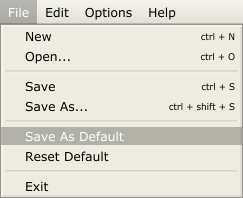

Pedalboard Files
This page discusses the Pedalboard .pdl file format as well as the various user files it stores.
Pedalboard .pdl Files
The Pedalboard saves collections of Patches as .pdl files. These are simply xml files containing the data required to reconstruct a collection of patches. They can be saved and loaded via the File menu.
It should be possible to share .pdl files between computers (and OSes), but that will of course require both computers to have the plugins that were used in the original patches.
The Default File
It is possible to define a .pdl file as the default file to load whenever the Pedalboard is started.

Selecting Save As Default saves the current file as the default file. Whenever the Pedalboard is started or file->New is selected, that file will now be loaded. To reset the default file to a blank file, select File->Reset Default.
The default file is saved as default.pdl in the user files directory.
User Files
The Pedalboard stores the following user files:
- AppMappings.xml - Any application mappings are stored in this file.
- default.colourscheme - The default colour scheme for the app.
- Pedalboard2.Settings - This stores the list of available plugins as well as any audio and miscellaneous settings.
- RecentlyCrashedPluginList - If a plugin crashed while the app was trying to scan it via the Available Plugins window, it will be listed here so the app knows to not try and load it again.
- Pedalboard2LogFile-<date>.<time>.txt - Log file generated by the Event Log.
User Files Location
Depending on the OS, the above files will be located:
-
Windows XP/2000:
C:\Documents and Settings\<username>\Application Data\Pedalboard2 -
Windows Vista/7/8:
C:\Users\<username>\AppData\Roaming\Pedalboard2 -
OSX:
/Users/<username>/Library/Application Support/Pedalboard2 -
Linux:
/home/<username>/.Pedalboard2
Any user-created colour schemes will also be stored in this location, with any user-saved presets stored in the presets sub-directory.